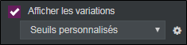

Réaliser une analyse comparative
L’analyse comparative permet de comparer des valeurs ou modalités d’une variable grâce à une variable de contexte, souvent de type date afin d’observer des variations dans le temps. Pour cela il faut définir les variables en lignes qui seront des variables d’échelle ou numérique dont vous souhaitez comparer les valeurs ainsi que les variables de filtre qui seront des variables de contexte.
EXEMPLE : Dans une enquête portant sur le tourisme, on peut vouloir afficher les effectifs des dépenses de différents domaines selon la durée du séjour. On peut choisir de représenter les effectifs des différentes dépenses pour un séjour de moins de 12 jours, puis pour un séjour entre 12 et 15 jours afin de les comparer pour en tirer une analyse.
Pour réaliser une analyse comparative, procédez comme suit :
-
Cliquez sur le bouton
 .
. -
Sélectionner analyse avancée.
-
Cliquez sur analyse comparative.

-
Faites un drag and drop des variables à comparer (en lignes) et des variables filtres (en colonnes) depuis la liste des variables disponibles.

-
(Facultatif) Cochez la case Mettre à jour toutes les colonnes lors d’un changement de filtre, pour que les résultats soient affichés en fonction du filtre utilisé dans la colonne précédente.
-
(Facultatif) Ajoutez une colonne invariante (qui s'appelle "Total" par défaut), et définissez sa position (au début / à la fin du tableau).
REMARQUE : Il faut insérer plusieurs fois une même variable dans la partie Filtres de comparaison en colonnes afin de comparer entre elles des modalités d'une même question (voir l'exemple ci-dessous : Comparaison des dépenses entre les années 2015, 2016 et 2017.


Une fois le tableau réalisé, il est possible de changer les variables en sélectionnant l’analyse et en cliquant sur ou en faisant clic droit éditer sur l’analyse.
 OPTIONS ET ANALYSE DE L'ANALYSE COMPARATIVE
OPTIONS ET ANALYSE DE L'ANALYSE COMPARATIVE
Dans l’onglet options, catégorie calcul, pour toutes les options (regrouper les modalités, choisir un barème et mettre en classe), il est possible de choisir à quelle variable vous souhaitez les appliquer et si vous souhaitez l’appliquer à toutes les variables similaires à celle choisie.
Dans l’onglet option, catégorie tableau, vous pouvez choisir d’afficher les variations des valeurs entre les modalités de filtre choisies, grâce à des pictogrammes.

Consultez la page sur le paramétrage des variations pour plus d'informations.